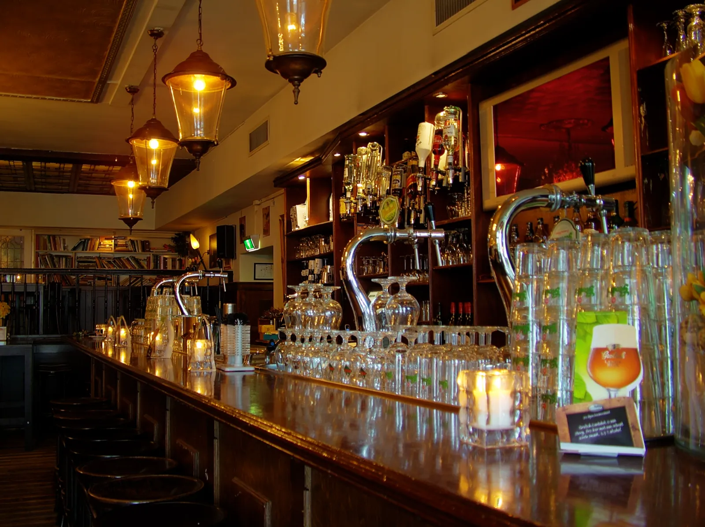
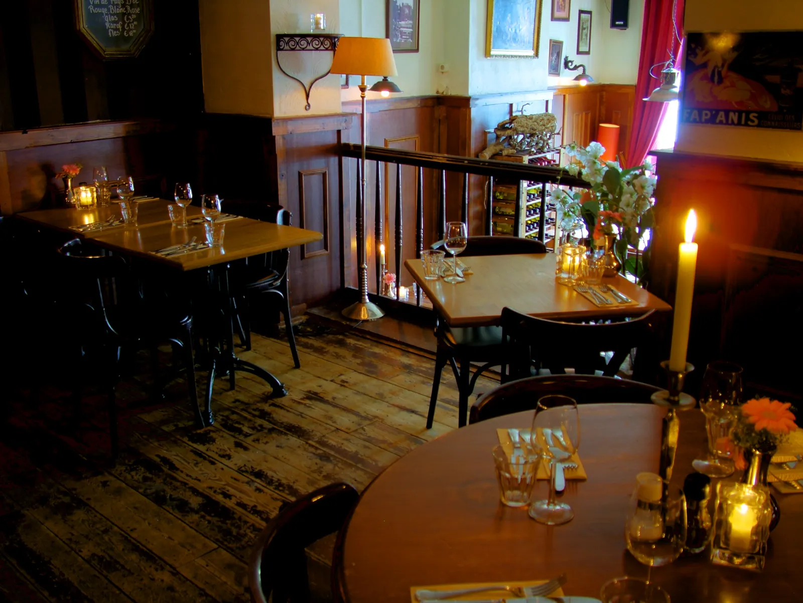

Voorstraat 16, Voorschoten
De huiskamer van Voorschoten
Grand café en restaurant aan de Voorstraat. Zeven dagen per week open voor koffie, lunch, borrel, diner, feesten en partijen.
- Koffie
- Lunch
- Borrel
- Diner
- Feesten & partijen

Welkom bij het Wapen van Voorschoten
Het Wapen is zeven dagen per week geopend: voor een kop koffie met gebak, een broodje of soep op de lunch, een borrel aan de bar, of een diner bij kaarslicht. Een plek waar je zo binnenloopt.
Ook voor je verjaardag, bedrijfsfeest of babyborrel kun je er terecht. Lees meer onder feesten & partijen.
Menukaart
De lunchkaart en de dinerkaart van juli 2026: de lunchkaart voor het broodje of de soep, de dinerkaart voor de avond.

Reserveren
Voor een lunch of diner met maximaal 20 personen reserveer je uitsluitend telefonisch.
Met meer dan 20 personen? Gebruik dan het contactformulier.
Feesten & partijen
Het Wapen van Voorschoten leent zich bij uitstek voor feesten en partijen. Zo kunnen wij jouw borrel verzorgen in ons café. Of je wilt bijvoorbeeld graag dat wij een besloten partij regelen in het sfeervolle restaurant.
De mogelijkheden zijn zeer uitgebreid. Van feestavond met lopend buffet tot babyborrel. Van bedrijfsfeest tot een themaavond!
Voor meer informatie kun je gerust even bij ons binnenlopen of contact opnemen voor een afspraak. Wij maken natuurlijk graag een vrijblijvende offerte voor je.
Agenda
Het Wapen van Voorschoten organiseert heel veel verschillende evenementen. Hier komt de agenda zodra er data bekend zijn.
Werken bij het Wapen
Het Wapen is 7 dagen per week geopend voor koffie, lunch, borrel, diner, feesten en partijen. Wil jij werken in de huiskamer van Voorschoten?
Medewerker bediening vanaf 16 uur per week
Leeftijd 20+, ruime horeca-ervaring.
Wat we verwachten
- Je bent gezellig en goedlachs
- Je bent een teamspeler
- Je hebt ruime ervaring in de bediening en achter de bar
- Je werkt met een wisselend werkrooster
- Je hebt overzicht en kunt collega's aansturen
- Je denkt mee met de bedrijfsvoering
- Je woont in de buurt van Voorschoten
- Een Sociale Hygiëne Diploma is een pré
Wat we bieden
- Een goed salaris, ruim boven de CAO
- Goede fooi
- Een informele werksfeer
- Geregeld een weekenddag vrij
- Minimaal 2x per jaar een uitje
Reageren? Stuur je CV met foto, via de contactgegevens.
Zelfstandig werkend kok fulltime, 38 of 32 uur
Mise en place, lunch en diner, wisselend overdag en 's avonds. Je werkt in een klein team en denkt mee met de chef-kok, ook over inkoop en voorraad.
Wat we vragen
- MBO 4 kokspapieren, bij voorkeur SVH leermeester
- Kennis van kooktechnieken en inkoop
- Ervaring met Office, bestelsystemen en Hcapp
- Goed Nederlands
- Minimaal 3 jaar ervaring
Wat we bieden
- Salaris boven de CAO
- 4-daagse werkweek in overleg
- Geregeld een weekend vrij
- Eerlijke fooiverdeling
Interesse? Neem contact op via de contactgegevens.
Contact
Het Wapen van VoorschotenVoorstraat 16
2251 BN Voorschoten
071 - 888 0270
info@wapenvanvoorschoten.nl
Openingstijden
| Maandag t/m donderdag | 10.00 - 23.30 |
|---|---|
| Vrijdag | 10.00 - 01.00 |
| Zaterdag | 10.00 - 01.00 |
| Zondag | 11.00 - 23.30 |